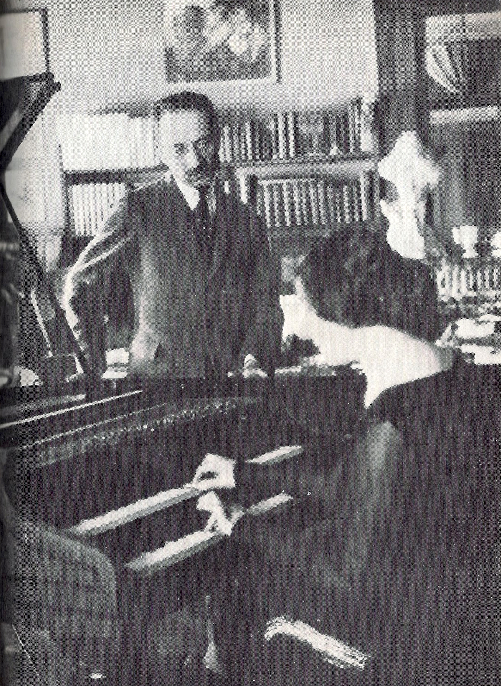
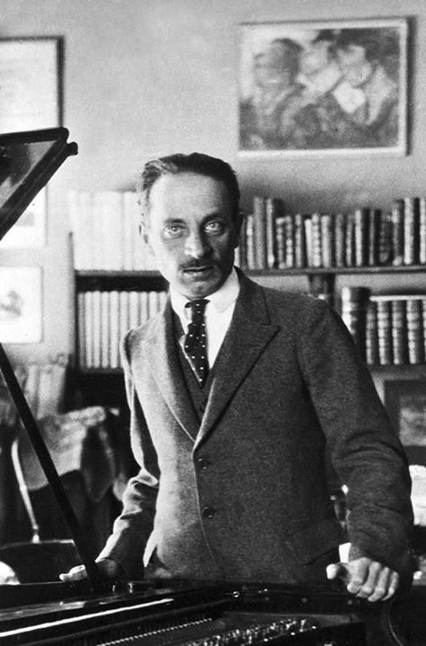

Rilke na starej fotografii
Rilke i Wanda Landowska
Rilke poznał Wandę Landowską, wirtuozkę klawesynu, w Paryżu; jej muzyka wyczarowała przed nim, jak pisał, „ów dawny, inny świat”, w którym tkwiły „korzenie i pędy wszystkich moich dzieł”.
Landowska to ciesząca się międzynarodową sławą polska klawesynistka, pianistka i kompozytorka. W latach 1900-1913 wykładała w paryskiej Schola Cantorum, 1913-1919 w konserwatorium w Berlinie. W roku 1936 założyła w Saint-Leu-La-Forêt pod Paryżem szkołę muzyki dawnej. W 1940 roku wyemigrowała do USA.
Rilke spotykał ją wielokrotnie i słuchał jej koncertów w Berlinie, Monachium, Bazylei. Landowska wraz ze swą matką Ewą służyły Rilkemu pomocą przy odzyskaniu dwu skrzyń jego osobistych papierów i rodzinnych pamiątek, zarekwirowanych w jego paryskim mieszkaniu w chwili wybuchu I wojny światowej.
